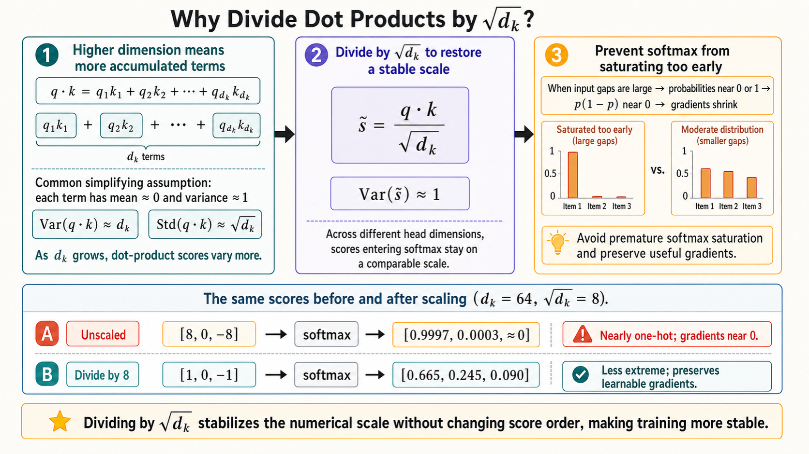
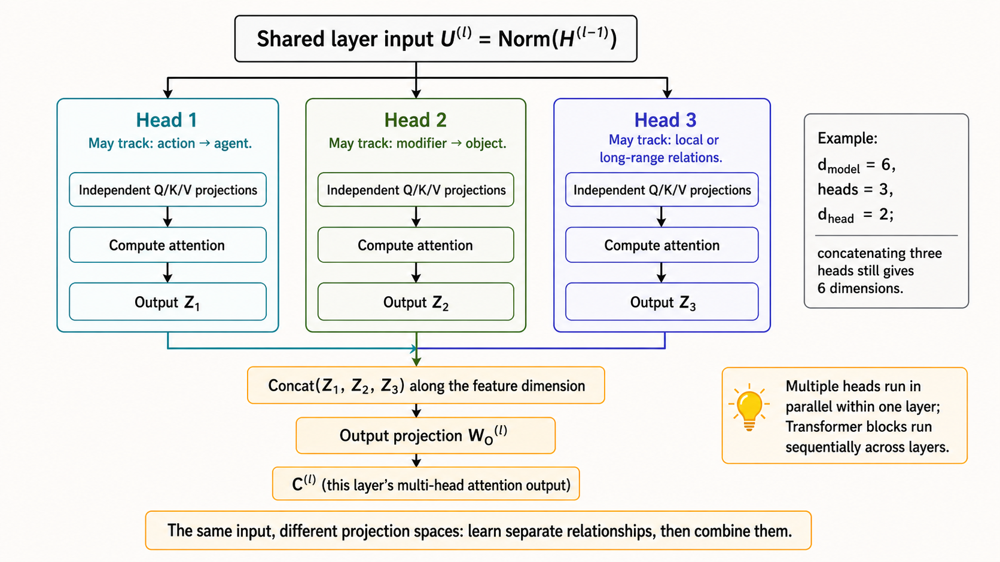
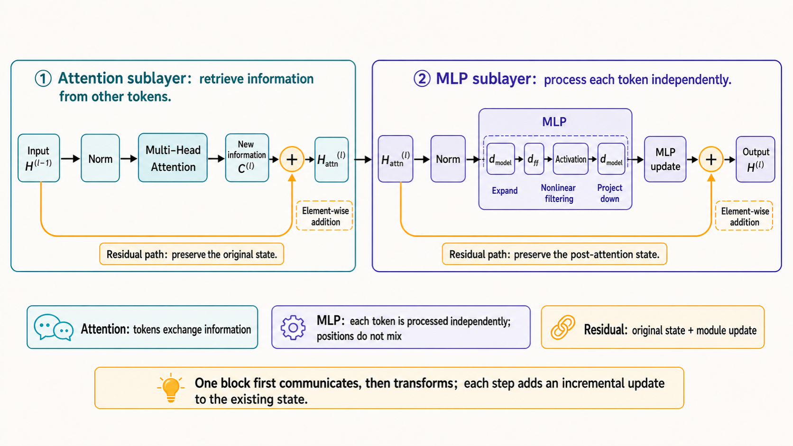
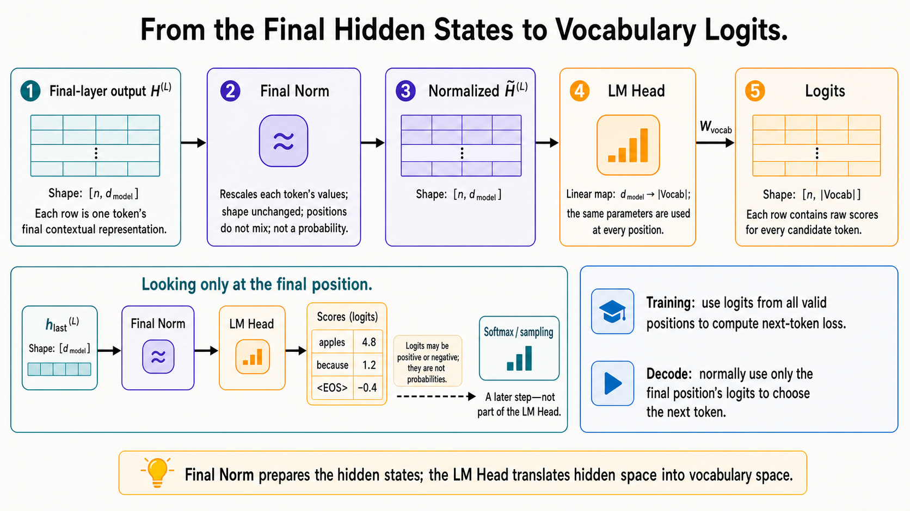
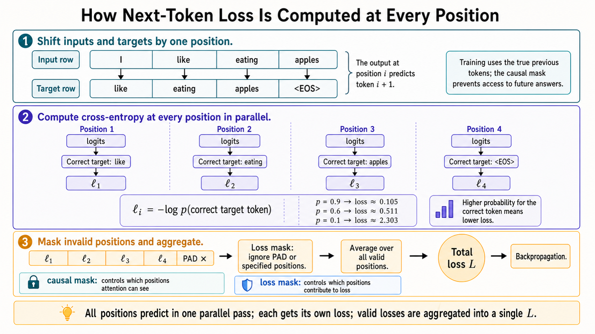
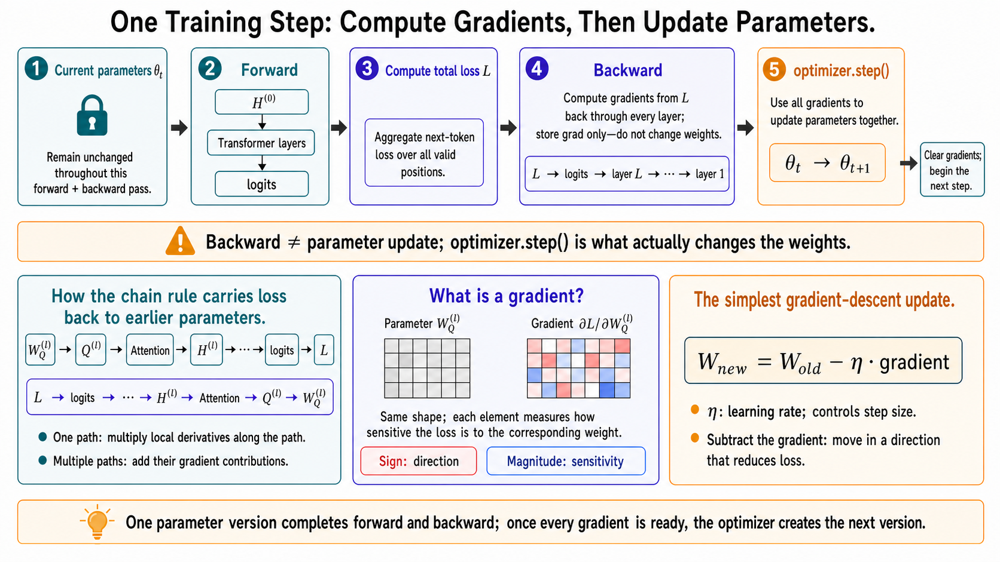

Transformer LLMs for Beginners
How does a decoder-only Transformer turn a sequence of tokens into next-token predictions? And once it makes a prediction, how does the error travel backward through the network to update billions of parameters? This article follows the entire path—from tokenization to attention, logits, loss, and gradient-based learning.
Inference introduces another set of ideas—prefill, autoregressive decoding, and the KV cache. Those deserve their own treatment, so here we will stay focused on the Transformer itself and what happens during training.
1. What Is the Model Actually Learning?
GPT-style language models are autoregressive: at each position, the model uses the tokens that came before it to predict the next token.
Suppose a tokenizer produces the following sequence:
I like eating apples <EOS>During training, the input and target are shifted by one position:
| Context available at this position | Prediction target |
|---|---|
| I | like |
| I, like | eating |
| I, like, eating | apples |
| I, like, eating, apples | <EOS> |
<EOS>—the end-of-sequence marker—is itself a
token. The model must learn when a sequence should end; the application
does not simply stop generation after an arbitrary word.
The complete target sequence is already known during training. That means the GPU can process all token positions in parallel. A causal mask still ensures that each position can attend only to itself and earlier tokens, so the model cannot peek at the answer it is supposed to predict.
This is what parallelism means in the training phase—and during the prefill stage of inference. Within a single Transformer layer, the model can compute
\[ Q=XW_Q,\qquad K=XW_K,\qquad V=XW_V \]
for every known token at once. Predicting token 2 from token 1 and predicting token \(n\) from tokens 1 through \(n-1\) are represented in one parallel computation.
Autoregressive decoding is different. The next token does not exist yet. The model must predict it, append it to the context, and then repeat the process. That dependency makes decoding sequential across generated tokens.
2. Turning Text Into the Transformer’s Initial State
2.1 Tokenization: From Text to IDs
A Transformer does not operate directly on strings. A tokenizer first converts text into token IDs. Algorithms such as Byte-Pair Encoding (BPE) merge frequent text fragments into tokens while splitting rare or unseen words into smaller subwords, characters, or byte-level pieces.
A simplified example might look like this:
"I like apples" → [token_17, token_263, token_981]These integers are identifiers, not semantic representations. The next step turns each ID into a vector.
2.2 Embeddings: From IDs to Vectors
For every token ID, the model retrieves one row from a trainable embedding matrix:
\[ x_i=E[token_i] \]
The resulting vector gives the model a continuous representation it can transform and combine with other token representations.
2.3 The Model Also Needs Position
Token embeddings alone do not distinguish “I like you” from “you like me.” The model needs information about token order.
Different architectures provide it in different ways:
- learned absolute position embeddings;
- fixed positional encodings;
- relative-position methods;
- Rotary Position Embeddings (RoPE), which rotate the query and key representations instead of adding a position vector directly to the token embedding.
Let the representation entering the first Transformer layer be
\[ H^{(0)}=X \]
For a sequence of length \(n\) and a hidden size of \(d_{model}\),
\[ H^{(0)}\in\mathbb{R}^{n\times d_{model}} \]
Each row is the initial hidden vector for one token. In a model that uses RoPE, \(H^{(0)}\) is typically the token embedding itself; positional information is applied later, when each layer constructs its queries and keys.
The notation \(\mathbb{R}^{n\times d_{model}}\) simply describes the matrix shape: there are \(n\) token rows, and every row contains \(d_{model}\) values.
2.4 Context Length, Stride, and Batch Size
The context length is the maximum number of tokens the model can accept in one sequence. During training, long documents are usually divided into fixed-length windows.
- If
stride < context length, adjacent windows overlap. - If
stride = context length, the windows are contiguous and do not overlap. - If
stride > context length, gaps appear and some tokens are skipped.
The batch size is the number of training examples processed in one training step. Larger batches can improve hardware throughput, but they use more memory and do not automatically produce a better model.
At this point, a batch of discrete token IDs has become the initial hidden state \(H^{(0)}\). Now we can follow that state through one Transformer block.
3. Inside a Transformer Block
3.1 Hidden States Travel Between Layers; Q, K, and V Live Inside a Layer
Layer \(l\) receives the previous layer’s output:
\[ H^{(l-1)} \]
The hidden state \(H\) is the representation passed from one layer to the next. It is not the same thing as the queries, keys, and values.
In a common Pre-Norm architecture, the layer first normalizes its input:
\[ U^{(l)}=\operatorname{Norm}(H^{(l-1)}) \]
It then uses its own learned parameter matrices to project that normalized state into queries, keys, and values:
\[ \begin{aligned} Q^{(l)} &= U^{(l)}W_Q^{(l)} \\ K^{(l)} &= U^{(l)}W_K^{(l)} \\ V^{(l)} &= U^{(l)}W_V^{(l)} \end{aligned} \]
The distinction is fundamental:
| Object | What it is | Fixed during inference? |
|---|---|---|
| \(W_Q^{(l)}, W_K^{(l)}, W_V^{(l)}\) | Learned parameter matrices in layer \(l\) | Yes |
| \(Q^{(l)}, K^{(l)}, V^{(l)}\) | Activations computed from the current input | No; they change with the input |
Different layers have different parameters. In general,
\[ W_Q^{(1)}\ne W_Q^{(2)} \]
3.2 Queries and Keys Decide Where to Look; Values Supply What to Retrieve
The hidden state \(H\) is already a matrix of token representations. Why project it into three more representations?
Because attention asks each token to play three distinct roles:
- Query (Q): What information is this position looking for?
- Key (K): What features does each position expose for matching?
- Value (V): What content should be returned if the match is strong?
\(H\) is a token’s combined state. “What I need,” “how others can find me,” and “what I will contribute” are different jobs. \(W_Q\), \(W_K\), and \(W_V\) do not cut \(H\) into three pieces; they project the same state into three separately learned representation spaces. This lets the model separate the criteria used for matching from the content that is eventually transmitted.
For a query at position \(i\) and a key at position \(j\), the raw attention score is
\[ s_{ij}=Q_iK_j^T \]
This score measures how well \(Q_i\) matches \(K_j\) in the representation space learned by the current attention head.

Within one attention head, the sequence is:
Q × Kᵀ → matching scores
softmax → attention weights
weights × V → a context-aware output for each token3.3 The Causal Mask Prevents the Model From Looking Ahead
During training, all tokens enter the layer together. Without a mask,
the position containing I could directly attend to
like, even though like is the answer it is
supposed to predict.
The causal mask is defined as
\[ M_{ij}= \begin{cases} 0,&j\le i\\ -\infty,&j>i \end{cases} \]
For our running example, the allowed attention pattern looks like this:
K_I K_like K_eating K_apples
Q_I ✓ × × ×
Q_like ✓ ✓ × ×
Q_eating ✓ ✓ ✓ ×
Q_apples ✓ ✓ ✓ ✓Entries assigned \(-\infty\) become zero after softmax. Every row can therefore be computed in parallel without leaking information from future tokens.
3.4 Why Scaled Dot-Product Attention Divides by \(\sqrt{d_k}\)
For a single attention head,
\[ \operatorname{Attention}(Q,K,V)= \operatorname{softmax}\left( \frac{QK^T}{\sqrt{d_k}}+M \right)V \]
We have already seen the mask \(M\). The remaining detail is the scaling factor \(\sqrt{d_k}\).
The dot product between one query \(q\) and one key \(k\) sums \(d_k\) component-wise products:
\[ s=qk^T=\sum_{r=1}^{d_k}q_rk_r \]
Under a common simplifying assumption, the components \(q_r\) and \(k_r\) are approximately independent, with mean 0 and variance 1. Each product \(q_rk_r\) then has variance of roughly 1. After summing \(d_k\) terms,
\[ \operatorname{Var}(s)\approx d_k, \qquad \operatorname{Std}(s)\approx\sqrt{d_k} \]
As the head dimension grows, the raw scores naturally spread over a wider numerical range. Dividing by \(\sqrt{d_k}\),
\[ \widetilde{s}=\frac{s}{\sqrt{d_k}} \]
brings their variance back to a stable scale:
\[ \operatorname{Var}(\widetilde{s}) =\frac{\operatorname{Var}(s)}{d_k} \approx1 \]

This matters because softmax is highly sensitive to differences between its inputs. If \(d_k=64\), then \(\sqrt{d_k}=8\). The unscaled scores \([8,0,-8]\) produce approximately
\[ [0.9997,0.0003,0] \]
after softmax. Scaling them to \([1,0,-1]\) produces the much less extreme distribution
\[ [0.665,0.245,0.090] \]
The local derivative of softmax contains the term \(p(1-p)\). When \(p\) approaches 0 or 1, that term approaches 0 as well, weakening the gradient that flows backward. Dividing by \(\sqrt{d_k}\) does not change the ordering of the dot-product scores. It controls their scale before softmax, preventing the distribution from becoming extreme merely because the representation dimension is large. The result is more stable training and healthier gradients.
3.5 Multi-Head Attention Learns Relationships in Several Projection Spaces
One attention head looks for relationships in one learned projection space. Multiple heads allow the same layer to model different patterns—such as action and agent, modifier and object, local syntax, coreference, or long-range dependencies.

The head outputs are concatenated and passed through an output projection:
\[ C^{(l)}=\operatorname{Concat}(head_1,\ldots,head_h)W_O^{(l)} \]
The heads operate in parallel within one layer. Transformer blocks themselves are stacked sequentially: the output of one block becomes the input to the next.
3.6 Residual Connections and the MLP Complete the Block
Attention lets each token retrieve information from other visible positions. A typical Pre-Norm block then uses residual connections and a feed-forward network:
\[ H_{attn}^{(l)}=H^{(l-1)}+C^{(l)} \]
\[ H^{(l)}=H_{attn}^{(l)}+ \operatorname{MLP}(\operatorname{Norm}(H_{attn}^{(l)})) \]

The two components do different work:
- Residual connections preserve the incoming representation and make it easier for gradients to travel through a deep network.
- The MLP transforms each token independently with a nonlinear feed-forward network, usually expanding the representation to a larger intermediate dimension before projecting it back down.
Architectures differ in normalization placement and other block details, but the main data flow remains recognizable:
Input H⁽ˡ⁻¹⁾
→ Norm → Q/K/V → Masked Multi-Head Attention
→ Output projection + residual connection
→ Norm → MLP + residual connection
→ Output H⁽ˡ⁾4. Stacking Blocks to Produce Logits
The first block’s output becomes the second block’s input:
\[ H^{(1)}=\operatorname{Block}^{(1)}(H^{(0)}) \]
\[ H^{(2)}=\operatorname{Block}^{(2)}(H^{(1)}) \]
More generally,
\[ H^{(l)}=\operatorname{Block}^{(l)}(H^{(l-1)}) \]
There are two useful ways to view the computation:
Across layers: H⁽⁰⁾ → Block 1 → H⁽¹⁾ → Block 2 → … → H⁽ᴸ⁾
Inside a layer: H⁽ˡ⁻¹⁾ → Q/K/V → Attention → MLP → H⁽ˡ⁾After the final Transformer block, the model applies a final normalization and an LM Head—the language-model output projection—to map each hidden vector into vocabulary space:
\[ Logits=\operatorname{LMHead}(\operatorname{Norm}(H^{(L)})) \]
For a sequence length of \(n\) and a vocabulary of size \(|Vocab|\), the training-time logits usually have shape
\[ [n,|Vocab|] \]
Every row contains one raw score for every candidate next token.

Here an important training–inference distinction appears:
- During training, the model uses the logits at every valid position to compute next-token loss.
- During autoregressive decoding, the application normally uses only the final position’s logits to choose the next token.
Logits are raw scores. They can be positive or negative, and they are not probabilities until a softmax is applied.
5. From Logits to Next-Token Loss
Applying softmax to the logits produces a probability distribution over the vocabulary. Cross-entropy loss looks at the probability assigned to the correct next token: the higher that probability, the lower the loss.

If the correct next token at position \(i\) is \(y_i\), and the model assigns it probability \(p(y_i)\), the cross-entropy loss at that position is
\[ \ell_i=-\log p(y_i) \]
The full definition of cross-entropy is
\[ H(P,Q)=-\sum_jP_j\log Q_j \]
In standard next-token training, the target distribution \(P\) is one-hot: it contains 1 at the correct token and 0 everywhere else. Every term except the correct token therefore disappears, leaving \(-\log p(y_i)\).
The negative sign converts “higher correct-token probability is better” into “lower loss is better.” The logarithm strongly penalizes confident mistakes and turns the product of conditional sequence probabilities into a sum of position-wise losses.
The losses from all valid positions in the sequence and batch are then summed or averaged according to the training configuration. A common mean reduction is
\[ L=\frac{1}{N_{valid}}\sum_{i=1}^{N_{valid}}\ell_i \]
Padding positions—or any positions excluded by a loss mask—do not contribute to \(N_{valid}\).
In practice, training code usually passes the logits and target token IDs directly to a cross-entropy function. The implementation performs a numerically stable log-softmax internally; there is no need to construct one-hot vectors manually or sample a token before computing the loss.
The causal mask and the loss mask solve different problems:
- The causal mask controls which positions attention is allowed to read.
- The loss mask controls which positions contribute to the training objective.
6. Backpropagation First, Parameter Updates Second
A standard training step follows this sequence:
Complete forward pass: H⁽⁰⁾ → … → H⁽ᴸ⁾ → logits
→ compute and aggregate cross-entropy across valid positions
→ backpropagate gradients from the final layer to the first
→ call optimizer.step() to update all trainable parameters
Let \(\theta_t\) denote the complete set of trainable parameters used during training step \(t\). It includes the embedding matrix, every layer’s Q/K/V and output projections, MLP weights, normalization parameters, and the LM Head.
The subscript \(t\) refers to the training step—not a Transformer layer or token position. A matrix such as \(W_Q^{(l)}\) is one specific parameter inside \(\theta_t\).
Hidden states, Q/K/V activations, logits, and the KV cache are runtime results computed from an input. They are not part of \(\theta_t\).
The entire forward and backward pass uses the same parameter version \(\theta_t\). The weights stay fixed while backpropagation computes gradients. Only the optimizer creates the next parameter version:
\[ \theta_t \xrightarrow{\text{forward/backward}} \nabla_{\theta_t}L \xrightarrow{\text{optimizer}} \theta_{t+1} \]
The first layer’s \(W_Q^{(1)}\) is not updated as soon as that layer finishes its forward computation. At that point, the model does not yet know the final prediction error. Only after the total loss has been computed can the chain rule produce gradients such as
\[ \frac{\partial L}{\partial W_Q^{(l)}},\qquad \frac{\partial L}{\partial W_K^{(l)}},\qquad \frac{\partial L}{\partial W_V^{(l)}} \]
How the Chain Rule Carries Error Backward
The chain rule describes how a variable affects a final result through a sequence of intermediate operations. If
\[ x\rightarrow y\rightarrow L \]
then
\[ \frac{\partial L}{\partial x} = \frac{\partial L}{\partial y} \frac{\partial y}{\partial x} \]
Inside a Transformer, the dependency path might be
\[ W_Q^{(l)}\rightarrow Q^{(l)}\rightarrow Attention\rightarrow H^{(l)} \rightarrow\cdots\rightarrow logits\rightarrow L \]
Backpropagation starts at \(L\) and follows that graph in reverse, multiplying local derivatives along each path. If one variable affects the loss through several paths, the returned gradient contributions are added together.
The symbol \(\partial\) denotes a partial derivative. The total loss depends on a huge number of parameters, so
\[ \frac{\partial L}{\partial W_Q^{(l)}} \]
asks how \(L\) would change under a small change to the layer-\(l\) query matrix while the other parameters are treated as fixed.
Because \(W_Q^{(l)}\) is a matrix, its gradient has the same shape. Each gradient element measures the sensitivity of the loss to the corresponding weight. The sign indicates direction, and the magnitude indicates how sensitive the current loss is to that parameter.
For the simplest form of gradient descent,
\[ W_Q^{(l)}\leftarrow W_Q^{(l)}- \eta\frac{\partial L}{\partial W_Q^{(l)}} \]
where \(\eta\) is the learning rate. The gradient points in the direction of the steepest local increase in loss, so subtracting it moves the parameter in the opposite direction.
Backpropagation only computes and stores gradients. After all
parameter gradients have been derived from the same forward pass and the
same total loss, optimizer.step() performs the actual
weight update.
The optimizer can update the embedding matrix, Q/K/V projections, attention output projections, MLPs, normalization parameters, and LM Head. With gradient accumulation, several micro-batches contribute gradients before one optimizer step is performed.
7. The Whole Training Path in One View
Raw text
→ Tokenizer: produce token IDs
→ Shift targets by one position: define the next-token objective
→ Embeddings and positional information: construct H⁽⁰⁾
→ Block 1: create Q/K/V, run attention and the MLP, produce H⁽¹⁾
→ Blocks 2…L: repeatedly transform the hidden states into H⁽²⁾…H⁽ᴸ⁾
→ Final Norm + LM Head: produce vocabulary logits at every position
→ Compare logits with the correct next tokens to compute cross-entropy loss
→ Backpropagate through the complete computation graph
→ Optimizer step: update the model weightsTraining turns raw text into a learning signal that reaches every trainable parameter. Once training is complete, those weights are fixed for inference. The next part of the story is how the model uses them during prefill and token-by-token decoding—and how the KV cache prevents it from recomputing the same keys and values at every step.